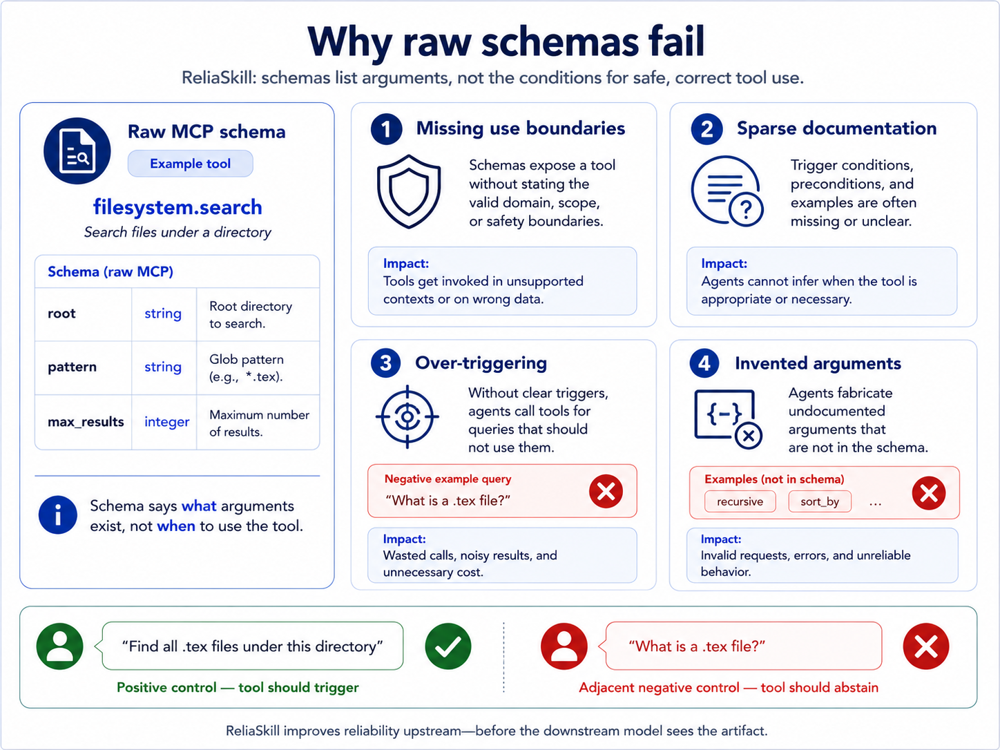
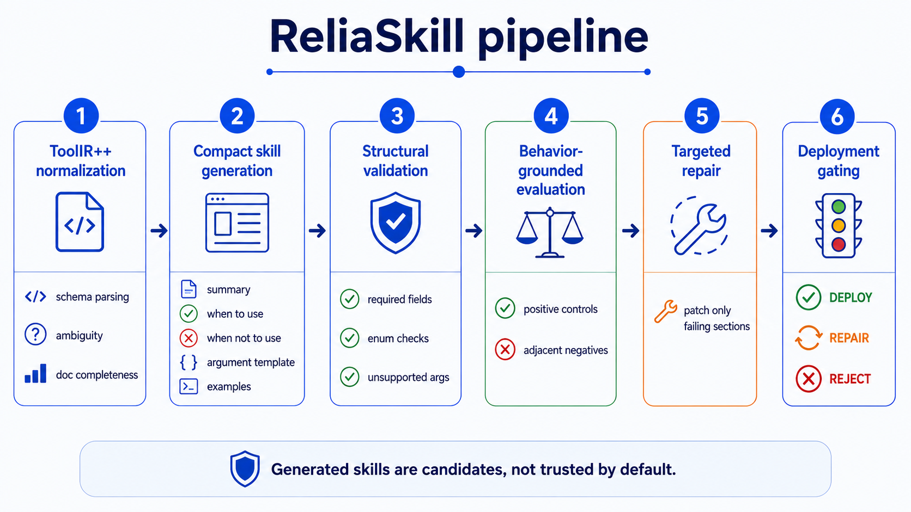
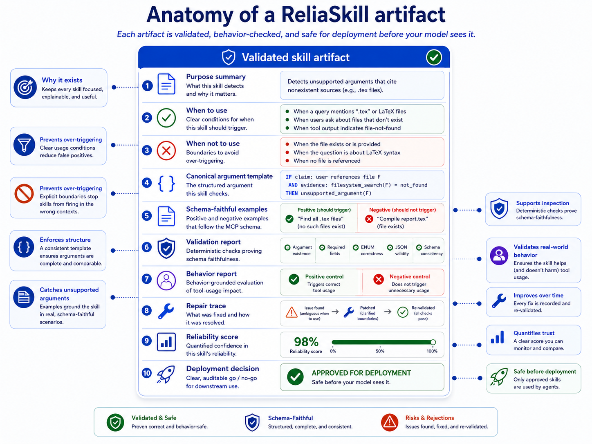
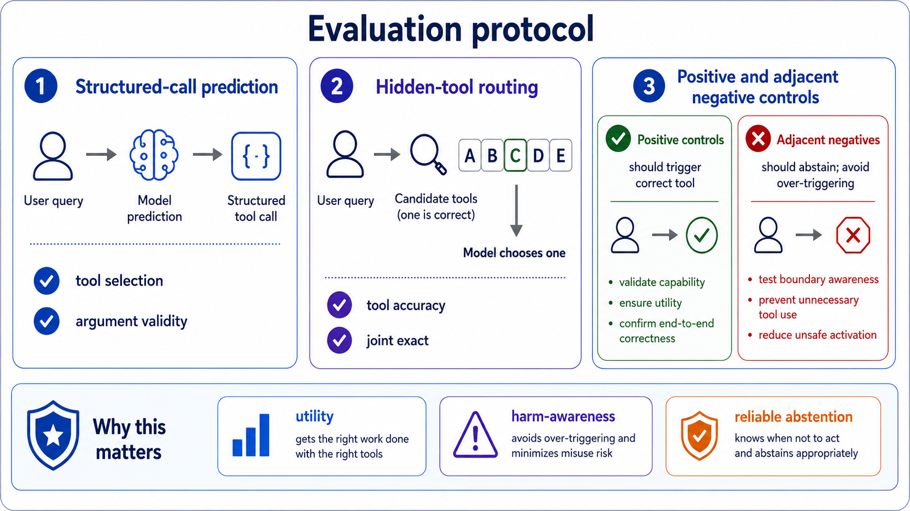
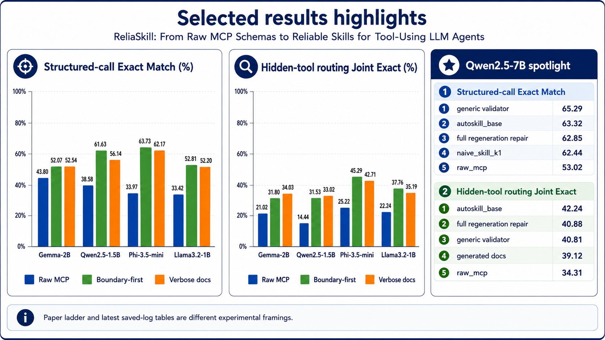

Missing use boundary
Sparse docs leave trigger conditions implicit, so a model has to infer the policy from a thin interface.
Research system for MCP skill cold-start
Pre-deployment validation, repair, and gating for reliable MCP-style tool-use skills.
ReliaSkill converts raw MCP-like schemas and sparse documentation into compact skill artifacts with explicit use boundaries, schema-faithful examples, validation reports, repair traces, reliability scores, and deployability decisions before downstream LLM agents see them.
{
"tool": "write_file",
"args": {
"path": "string",
"content": "string"
}
}
Problem
MCP schemas tell a model what arguments exist. They usually do not specify when the tool should fire, when it should abstain, or how an agent should interpret adjacent requests that look plausible but are out of scope.
Sparse docs leave trigger conditions implicit, so a model has to infer the policy from a thin interface.
Fluent generated skills may introduce fields that the underlying schema never accepted.
Agents can call a tool for adjacent requests where explanation, search, or abstention is the safer behavior.
Side-effect tools need explicit boundaries before deployment, not trust after one generated prompt.

Pipeline
ReliaSkill treats generated skills as candidates. Each candidate moves through normalization, generation, validation, behavior tests, targeted repair, and a final deployment gate.
Preserves the original schema and adds provenance, complexity, ambiguity, side-effect, and safety metadata.
normalizedCreates purpose, use boundaries, non-use boundaries, argument templates, and examples.
candidateChecks unsupported arguments, required fields, enum values, examples, contradictions, and compactness.
inspectedRuns positive controls and adjacent negative controls to measure utility and over-triggering risk.
testedPatches localized failing sections instead of defaulting to full skill regeneration.
patchedOutputs DEPLOY, REPAIR, or REJECT using explicit reliability evidence and repair traces.
gated
Artifact
ReliaSkill packages a compact agent-facing representation with machine-checkable evidence about schema faithfulness, behavior controls, repair history, and deployability.

Evaluation
ReliaSkill evaluates whether a representation helps models produce the correct call, select the right hidden tool, and abstain on adjacent negative controls.
Checks whether the predicted tool call matches the gold call and whether arguments are parseable and schema-faithful.
Exercise intended use cases with gold tools and gold arguments across difficulty tiers.
Test abstention on near-miss, explanation-versus-action, read-versus-write, and missing-information cases.
Measures tool selection and joint route-plus-argument correctness among candidate tools with hard distractors.
Does the representation help the model assemble the right call?
Does the representation avoid activating on adjacent out-of-scope requests?

Results
The README separates the paper's main ReliaSkill ladder from newer multi-model saved-log experiments with additional prompt-template and baseline conditions. This site keeps the same boundary.
| Condition | Joint EM | Selection Accuracy | Argument Validity |
|---|---|---|---|
raw_mcp | 17.15% | 26.07% | 43.66% |
schema_only | 15.73% | 25.80% | 41.22% |
naive_skill | 18.85% | 27.36% | 50.07% |
gated_skill | 21.12% | 31.39% | 52.78% |
Argument Validity is not strictly monotonic in the ablation table: w/o Repair has slightly higher Argument Validity than Full ReliaSkill, while Full ReliaSkill has higher Joint EM and Selection Accuracy.
| Model | Condition | Exact Match | Argument Validity |
|---|---|---|---|
| gemma2-2B | raw_mcp | 0.4380 | 0.8108 |
| gemma2-2B | skill_prompt_boundary_first | 0.5207 | 0.7840 |
| gemma2-2B | skill_prompt_verbose_docs | 0.5254 | 0.7985 |
| Qwen2.5-1.5B-Instruct | raw_mcp | 0.3858 | 0.7540 |
| Qwen2.5-1.5B-Instruct | skill_prompt_boundary_first | 0.6163 | 0.7531 |
| Qwen2.5-1.5B-Instruct | skill_prompt_verbose_docs | 0.5614 | 0.7841 |
| Qwen2.5-7B | raw_mcp | 0.5302 | 0.9663 |
| Qwen2.5-7B | generic_validator_no_behavior_tests | 0.6529 | 0.9172 |
| Qwen2.5-7B | multi_candidate_repaired_gated | 0.6183 | 0.8331 |
| phi 3.5-mini | raw_mcp | 0.3397 | 0.9697 |
| phi 3.5-mini | skill_prompt_boundary_first | 0.6373 | 0.9693 |
| llama3.2 1B | raw_mcp | 0.3342 | 0.8685 |
| llama3.2 1B | skill_prompt_boundary_first | 0.5281 | 0.9322 |
| Model | Condition | Tool Accuracy | Joint Exact |
|---|---|---|---|
| gemma2-2B | raw_mcp | 0.5214 | 0.2102 |
| gemma2-2B | skill_prompt_verbose_docs | 0.6373 | 0.3403 |
| Qwen2.5-1.5B-Instruct | raw_mcp | 0.5214 | 0.1444 |
| Qwen2.5-1.5B-Instruct | skill_prompt_boundary_first | 0.5647 | 0.3153 |
| Qwen2.5-1.5B-Instruct | skill_prompt_verbose_docs | 0.6373 | 0.3302 |
| Qwen2.5-7B | raw_mcp | 0.5214 | 0.3431 |
| Qwen2.5-7B | autoskill_base | 0.6278 | 0.4224 |
| Qwen2.5-7B | multi_candidate_repaired_gated | 0.5485 | 0.3580 |
| phi 3.5-mini | raw_mcp | 0.5214 | 0.2522 |
| phi 3.5-mini | skill_prompt_boundary_first | 0.5647 | 0.4529 |
| llama3.2 1B | raw_mcp | 0.5214 | 0.2224 |
| llama3.2 1B | skill_prompt_boundary_first | 0.5647 | 0.3776 |
Boundary-first and verbose-doc skill prompts often improve smaller-model structured-call Exact Match over raw_mcp.
Hidden-tool routing results show that agent-facing representations affect both tool selection and joint route-plus-argument correctness.
Some latest saved-log baselines outperform the current multi_candidate_repaired_gated condition, so universal dominance is not supported.
The paper ladder and latest saved-log multi-model tables use different condition sets and should be cited separately.

Implementation
The repository includes parsing, generation, validation, controls, repair, gating, routing, conversion, live sandbox, and analysis components.
Quick start
The commands below are copied from the README and use the repository's existing scripts.
python -m venv .venv
.\.venv\Scripts\Activate.ps1
python -m pip install --upgrade pip
python -m pip install -r requirements.txtpython scripts\run_reliability_pipeline.py --config configs\experiment.reliability.heuristic.sample.jsonpython scripts\run_benchmark_eval.py
python scripts\run_routing_eval.pypython -m unittest discover -s tests -vGitHub Pages
This showcase lives in docs/ and can be served by GitHub Pages from the main / docs source. It uses plain HTML, CSS, and JavaScript, with no backend and no build step.